Bienvenido a JavaScript
JavaScript
es uno de los lenguajes de programación más populares del mundo y se utiliza para agregar interactividad a páginas web, procesar datos y crear varias aplicaciones (aplicaciones móviles, aplicaciones de escritorio, juegos y más).Aprender los fundamentos de un idioma le permitirá crear el programa que desee, ya sea del lado del cliente o del lado del servidor.

Tu primer JavaScript
Comencemos agregando JavaScript a una página web. JavaScript en la web vive dentro del documento HTML . En HTML, el código JavaScript debe insertarse entre las etiquetas<script>
y</script>
: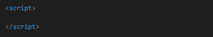
JavaScript se puede colocar en las secciones
<body>
y<head>
de la página HTML. En el siguiente ejemplo, lo colocamos dentro de la etiqueta<body>
.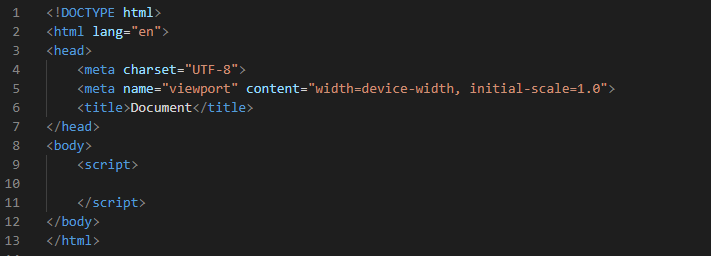
Recuerde que la secuencia de comandos, que se coloca en la sección <head>, se ejecutará antes de que se ejecute <body>. Si desea obtener elementos en el <body>, es una buena idea colocar su secuencia de comandos al final de la etiqueta del <body>.
Salida
Usemos JavaScript para imprimir"Hola Mundo"
en el navegador.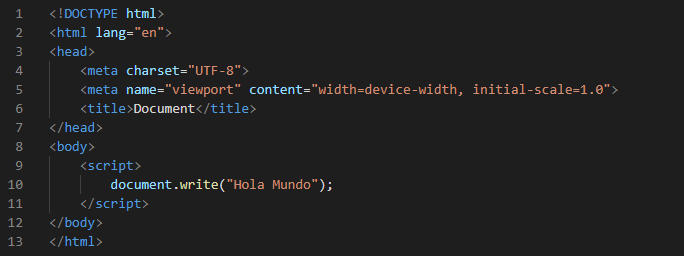
La función
document.write ()
escribe una cadena en nuestro documento HTML. Esta función se puede utilizar para escribir texto, HTML o ambos. El código anterior muestra el siguiente resultado: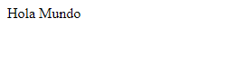
El método document.write () debe usarse solo para pruebas. Otros mecanismos de salida aparecen en las próximas lecciones.
Dar formato al texto
Al igual que en HTML, podemos usar etiquetas HTML para dar formato al texto en JavaScript. Por ejemplo, podemos generar el texto como un encabezado.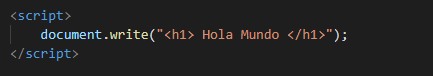
Resultado:
Puede generar casi todo en la página web utilizando JavaScript. Muchos marcos de JavaScript utilizan esto para crear páginas HTML.
Salida a consola
Mientras quedocument.write ()
se usa para escribir la salida HTML, la funciónconsole.log ()
se usa para realizar la salida a la consola web. La consola se utiliza con fines de prueba y depuración. Es parte del navegador web y le permite registrar mensajes, ejecutar código JavaScript y ver errores y advertencias. Los desarrolladores utilizan principalmente la consola para probar su código JavaScript.Por ejemplo :
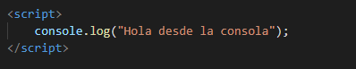
Resultado:
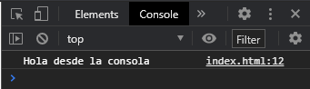
JavaScript en <head>
Puede colocar cualquier número de scripts en un documento HTML. Normalmente, la etiqueta de secuencia de comandos se coloca en el encabezado del documento HTML: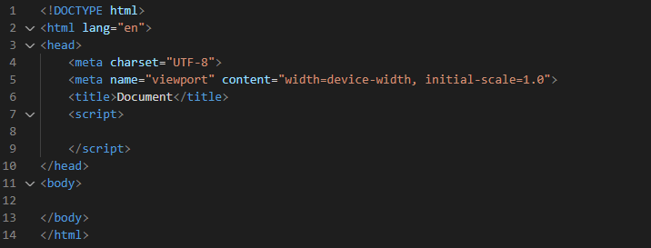
También hay una etiqueta <noscript>. Su contenido se mostrará si el navegador del cliente no admite scripts JS.
JavaScript en <body>
Alternativamente, incluya JavaScript en la etiqueta <body>.
Es una buena idea colocar los scripts en la parte inferior del elemento <body>. Esto puede mejorar la carga de la página, porque la visualización de HTML no está bloqueada por la carga de scripts.
La etiqueta <script>
La etiqueta <script> puede tener dos atributos,language
ytype
, que especifican el tipo de script:
El atributo "language" está obsoleto y no debe utilizarse.
En el siguiente ejemplo, creamos un cuadro de alerta dentro de la etiqueta del script, usando la función alert ().
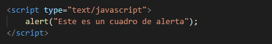
Resultado:

JavaScript externo
Los scripts también se pueden colocar en archivos externos.Los scripts externos son útiles y prácticos cuando se usa el mismo código en varias páginas web diferentes.
Los archivos JavaScript tienen la extensión de archivo .js.
A continuación, hemos creado un nuevo archivo de texto , y lo llamamos demo.js.
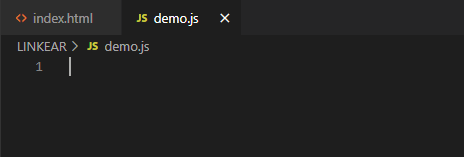
Tener scripts JS en archivos separados hace que su código sea mucho más legible y claro.
Utilizar JavaScript externo en HTML
Para utilizar un script externo, ponga el nombre del archivo de script en el atributo src (fuente) de la etiqueta <script>.Aquí hay un ejemplo:
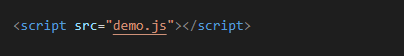
Su archivo demo.js incluye el siguiente JavaScript:

Los scripts externos no pueden contener etiquetas <script>
Funcionalidad JavaScript externo
El resultado del ejemplo anterior será idéntico al resultado cuando incluimos el JavaScript dentro del archivo HTML.Puede colocar una referencia de script externo en <head> o <body>, lo que prefiera.
El script se comportará como si estuviera ubicado exactamente donde se encuentra la etiqueta <script>.
Colocar un JavaScript en un archivo externo tiene las siguientes ventajas:
- Separa HTML y código.
- Hace que HTML y JavaScript sean más fáciles de leer y mantener.
- Los archivos JavaScript en caché pueden acelerar la carga de páginas.
Comentarios de una línea JavaScript
No todas las declaraciones de JavaScript se "ejecutan".El código después de una doble barra
//
, o entre/ *
y* /
, se trata como un comentario.Los comentarios se ignoran y no se ejecutan.
Los comentarios de una sola línea utilizan barras dobles.
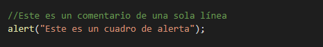
Resultado:
Es una buena idea hacer un comentario sobre la lógica de las funciones grandes para hacer que su código sea más legible para otros.
Comentarios de varias líneas
Todo lo que escriba entre/ *
y* /
se considerará un comentario de varias líneas.Aquí hay un ejemplo:
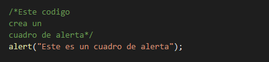
Los comentarios se utilizan para describir y explicar lo que hace el código.